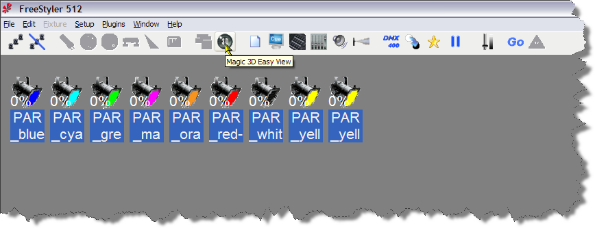
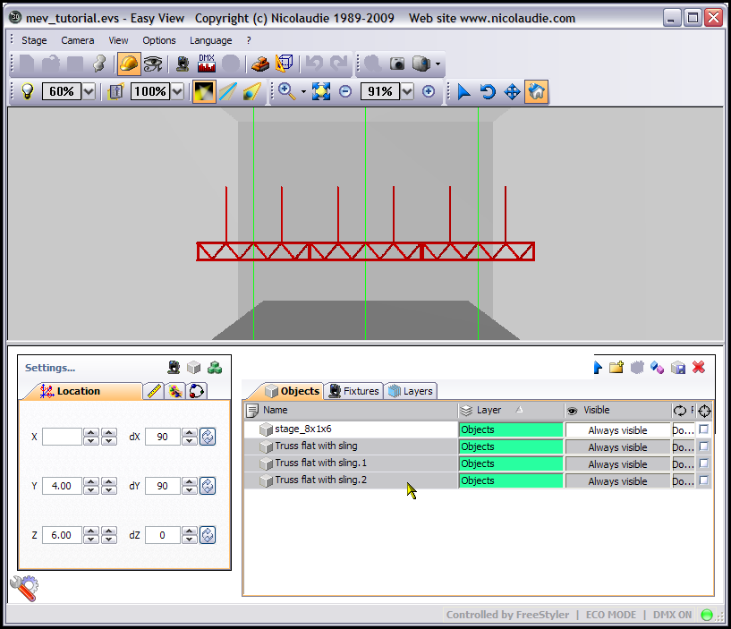
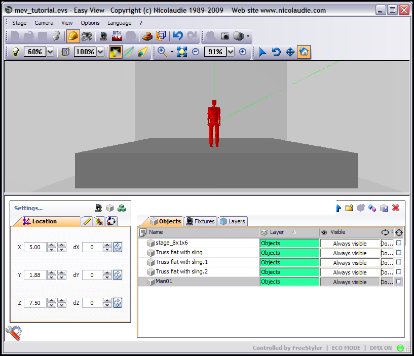
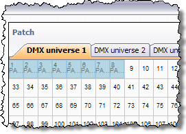
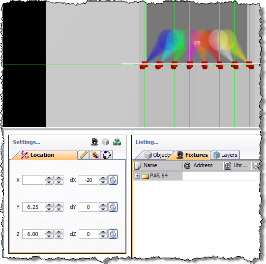

Table of Contents

Using Magic 3D Easy View
Using Magic 3D Easy View with FreeStyler can seem a bit daunting at first, but with a little help from this tutorial, I hope you will find it much easier.
You should have installed Magic 3D Easy View by ticking the relevant tick box when you installed FreeStyler.
If you have not installed Magic 3D Easy View then you can either download it from the Sunlite website and install it into the same folder that FreeStyler was installed in or you can re-install FreeStyler and ensure you have ticked the option to install Magic 3D Easy View.
I am going to use the 9 PAR Cans that I added to FreeStyler in the Add/Remove Fixtures tutorial I did, but the principals are the same regardless of what fixtures you are using.
Magic 3D Easy View when used with FreeStyler does not allow automatic patching of the fixtures you have in FreeStyler into Magic 3D Easy View, you have to patch fixtures in Magic 3D Easy View as well. The FreeStyler fixtures are also not compatible with Magic 3D Easy View, so you either can use existing fixtures that Magic 3D Easy View has in its fixture library or create them using the Scanlibrary program. I am not going to show you how to create your fixtures in the Scanlibrary program in this tutorial, that is for another tutorial.
Remember this is a tutorial to get you going with Magic 3D Easy View, it does not cover feature of the program. For example it does not cover the options for recording a movie.
I also do not go into layers as with the connection to FreeStyler only gives us the “ECO MODE” and not “FULL MODE” we can only have two layers and these are already defined as “Objects” and “Fixtures”.
If you get stuck with something then ask a question in the FreeStyler Support Forum.
Starting Magic 3D Easy View
Magic 3D Easy View must be started from the FreeStyler toolbar, if you start it any other way then it will not communicate with FreeStyler, unless you use your interface that sends the data to a Sunlite interface that can be used as in IN. Which is what I do with other lighting software or hardware that does not have a visualiser.

Click the “3D” icon on the FreeStyler toolbar as shown above to start Magic 3D Easy View, I will now just call it Easy View.
You will see the above splash screen, which also shows the date of the version of Easy View.
If you have never used Easy View before you should see a screen similar to the one above.
You can if you so wish use this stage but I doubt if you will, but it is a good playground to learn some of the features if you so wish.
I will not be using it in this tutorial, I will starting from a blank canvas, well an empty room.
To create a new “stage” as it is called in Easy View, select “New” from the “Stage” menu.
If the menu does not appear in your language, then go to the Language menu and select your language.
You will be given a prompt asking if you want to “save” the stage, if you have made changes then collect “Yes” otherwise click “No”
You will now have an empty grey room.
Now you can either carry on reading the information about the menus and toolbars or scroll down to the Adding objects.
Menus
OK, I suppose the first thing I should go through is the menus and toolbars.
Stage Menu
- New - Create a new 3D stage
- Open - Open a 3D stage
- Save - Save the 3D stage
- Save as… - Save the 3D stage with another name
- Import - Import a 3D stage
- Export - Export a 3D stage
- Print - Print
- Print preview - Print preview
- Print setup… - Print properties
- Build mode - Open the Construction mode
- User mode - Open the User mode
- Stage setting… - Open the “Stage settings” window
- Simple objects editor - Open the “Simple objects editor”
- Add fixture(s) - Add fixtures
- Quit - Exit the sofware
Camera Menu
- Front view
- Right view
- Left view
- Top view
- Rear view
- Move the camera
- Auto rotation
- Create a screenshot
- Open the “Movie recorder” window
- Save the current position of the camera
- Delete the selected camera
- Custom camera 1
- Custom camera 2
- Custom camera 3
- Custom camera 4
View Menu
- Always visible option
- Display or not the the lower half of the screen
- Display or not the the right half of the screen
- Display the standard toolbar
- Display the camera toolbar
- Display the options toolbar
- Display the zoom toolbar
- Display the mouse toolbar
Options Menu
- Option to save automatically when exiting the sofware
- Enable/disable the sound for any video played in the 3D stage
- Open the buttons assignment window
- Change the screen resolution
- Change the rendering mode
- Enable/Disable shadows
Language Menu
- Choose the language to use in the program
? Menu
- Help
- About
- Online Help
Toolbars
Standard toolbar
- Create a new stage
- Open a stage
- Save the stage
- Always on top toggle
- Switch to Construction mode
- Switch to User mode
- Add new fixture(s)
- Open the DMX input window
- Open the universes patch
- Open the stage settings window
- Open the simple objects editor
- Undo
- Redo
Options toolbar
- Adjust ambient lighting
- Adjust the fog intensity
- Change the rendering level
- Enable/disable the “laser” rendering
- Enable/disable shadows
Camera toolbar
- Open the movie maker window
- Create a screen shot
- Camera menu
Zoom toolbar
- Zoom menu (assign a zoom function to the left button of the mouse)
- Fit
- Zoom OUT
- Zoom fader
- Zoom IN
Mouse toolbar
- Objects selection
- Camera rotation
- Camera moving
- Default
Adding objects to your stage
Firstly the stage in MEV is the whole area of where your lightshow will be, it is not the box/plinth or “stage” that a band or other will perform on.
I can hear you all shouting “Why are you showing us how to add objects to the stage before we add the lights?”, OK I will tell you, it makes it easier to have something in the stage that you can point your lights to and use as orientation. I am going to setup a simply theatre type environment, so you have a “stage” and some trussing to hang the PAR Cans on. The Trussing will not be on stands so we are assuming it is a typical theatre that hangs it's truss on wind down cables. Personally, as I do lighting for a band and because of the limitations of the graphical disply within this program I only use a “stage” and maybe a person or two on the stage. My main use is to ensure I have got my movements and positions near to what I want to achieve at a venue. I am not worried about colours or gobos or producing “photo-realistic” displays. For that you would need to invest in something like WYSIWYG or Capture Polar, they cost money people, money.
Stage Settings
Back to the plot - let us set the size of our venue, click the Stage settings… button, which is the 10th button on the Standard Toolbar or select it from the Stage menu. You will be presented with the following dialogue.
This is the Stage settings… dialogue, I am not going to discuss the option here I will do that in another part of this tutorial. For me the current sizes of the venue is not big enough for a theatre so I am going to increase that. To change the values in any of the Size boxes you can either use the up and down arrows or type in the size. I am going to change them to 10.00, 8.00 & 12.00 metres for Width:, Height: and Depth:, yep it is a small theatre. If you work in Feet instead of Metres put in the above measuremnets in “Metres” then change the Units setting to “Feet” and it will change the values accordingly.
As can be seen in the above image. Click the “Red Cross” to close the Stage settings… dialogue.
Simple Objects Editor
Now let us put a “Stage” in the stage. I do wish they had called stage, venue, instead. Oh well.
The button on the Standard Toolbar that looks like a wireframe cube with a set square in front of it is the Simple objects editor, click it or select it from the Stage menu.
The above dialogue is what the Simple objects editor looks like when started. As you can see a Cube is displayed rotating around and currently has a width, height and depth of 1.00 unit each, these sizes are based on the Units selection on the Stage settings…, so If you are in metres then this is metres if you are in feet then this is in feet.
Now I am in Units of metres so if you are using feet then you will have to make adjustments to the size of the object yourself.
I am creating a Cube with the size as follows. 8.00, 1.00 and 6.00 as can be seen in the following image.
If your “stage” looks like this then all is fine,
but if it looks like the above image, then either you have put the Size in wrong or you need to press the Rotation button or you have the wrong object selected. Whatever the problem is ensure you have the settings as I have done above. Once done press the Save button.
The above Save As dialogue appears and it is going to save in the EasyViewLibrary folder which is inside the FreeStyler folder. Realistcally you should either place you “simple” objects inside one of the existing folders or create a folder to put them in. I am not going to bother for this object and I am going to save it right here. Naughty of me I know, but it is my tutorial.
Change the Filename: to stage_8x1x6.x and press the Save button. Once saved press the “Red X” in the top right to close the dialogue.
Placing a Stage on Screen
Now we have our “stage” we need to put it in the venue, sorry stage, grrr … lol.
For this we need to go into Construction Mode, currently we are in User Mode. To change into Construction Mode select the Constrcution mode button, it looks like a Hard Hat from the Standard Toolbar or select it from the Stage menu. The display will change into what looks like 3 panels, see image below.
As you can see the view of you stage is in the top part of the display and below that are two panels, one called Settings… and the other called Listing. Each of these panels has various tabs that can be selected, their use will become apparent as the program gets used.
For now click the Add object(s) button as shown above.
You will get an Object library dialogue box, select the object you created earlier, in my case it is the stage_8x1x6.x file and then press the Select button.
As you can see by the above image we now have this “Red” rectangle in the top half of the display and in the Listing.. panel we can see the object we have just loaded. The “Red” rectangle is the object we have just loaded and it is red because it is the currently selected object.
We now need to move this into position, I have not found away you can drag objects within the 3D view so we have to change it's postion using the Settings… panel. First select our object in the Listing… panel, this will feed the current co-ords of the object into the Settings… panel, does not do it upon loading an object even though it looks selected. Minor bug I think.
To ensure we are going to place the stage in the same place, click anywher in the 3D view but not on an object and then press the 1 key twice, the display should look like the following.

To position the object we use the Location tab on the Settings… tab.
X, Y and Z positions as described as if viewing from the front, which we did above.
X is left/right.
Y is up/down.
Z is front/back or out/in.
The object is centred across the venue so we do not need to change the X factor, … ha, ha, ha, a little joke. Actually it is the X postion, and it is just where we want it.
Firstly a thing to know, most objects have the reference point as the centre of the object. So in this case we want to position this object on the floor which is at Y 0.00, our object is 1.00 tall so the middle is at 0.50 which will mean we will have 0.50 below the floor if we set Y to 0.00, we need to set Y at 0.50. Again you can use the arrow buttons next to the input boxes. The arrow buttons to the left will increase/decrease the postion by 1. The arrows buttons to the right will increase/decrease by 0.05.
Set the Y location to 0.50, you can take it to 0.00 first to see that hald of the stage height would be below the floor.
OK we have the object on the floor and centred, we now need to move it back. The venue is 12 metres in depth, our object is 6 metres in depth, so we need to set the Z position to 9.00 as 12 - 3 = 9. Confused, well our object is 6 in depth, the venue is 12 in depth, our objects reference point is the centre so half of 6 is 3, take that 3 from the depth of our venue 12 and you are left with 9. I hope that makes sense.
So you should now have the following X, Y and Z values in the Location tab of the Settings.. panel.
X = 5.00
Y = 0.50
Z = 9.00
To see if it is postion correctly in the 3D view, click anywher in the 3D view window but not on an object and then press the 4 key, this gives you a top/down view.
The above image show the top/down view of our object in the position we selected by entering the X, Y and Z postions.
To see what you object looks like in the 3D view properly, we need to select the User mode icon, which is to the right of the Construction mode icon on the Standard Toolbar or select it from the Stage menu.
There is the object viewed from above, press keys 1 to 5 to view the venue from different positions. Once you have played around with look at your object from the five different views, press 1 twice in quick sucession to go back to the front view and then click the Construction mode button.
Adding Truss To Your Stage
Click the Add objects button as shown above and then in the Objects library dialogue open up the Truss folder. As this is a “theatre” I am going to use the Truss flat with sling.x file, so select that object and the press the Select button. It may not look like the truss has loaded in but it has, now you can either click into the 3D view, remember not on an object and then press the view buttons above to see the object or if you have a mouse with a wheel, does anyone use a mouse without a wheel now a days ?, click in the 3D view and then use the mouse wheel to zoom in. You will eventually see the object as shown in the below image.
Well that is no good to us in that position, we need to rotate that and move it up to the ceiling, ensure you have the truss selected, it should show as red, if not click the truss in the Objects tab of the Listing… panel, you cna select objects in the 3D view but I normally select them as I have just described, it is easier and more accurate.
Now on the Location tab of the Settings.. panel click the button as shown in the image below.
The above button rotates around the X axis by 90 degrees on each press, it will go from 0 to 90 to 180 to -90 and back to 0 on each successive press. Try it. Once you have done that ensure it has 90 in the dX box as shown in image below.
You can see in the above image that the piece of truss has rotated, fair enough not a brilliant example. Now press the rotate button for the Y axis. Keep doing it to see the differing views of the object as it rotates 90 degrees. Once done ensure it is set at 90 in the dY box.
As you can see the object has been rotated around the X and Y axis by 90 degrees in each axis and it is now in the right orientation.
Duplicating An Object
We could now move this towards the ceiling, but one truss bar is not enough, I want at least three of these above the stage. Now you can either add 2 more of these trusses as described above or you can duplicate the object. I am going to duplicate the object as you have not been shown that yet. Right click the object in the Objects tab of the Listing… panel and select Duplicate from the context menu that appears as can be seen in the image below.
A Duplicate dialogue will be displayed as in the image below.

This dialogue allows you to specify offsets for the new duplicated objects' position. You do not have to enter anything and it will be placed in exactly the same position as the source object. Now we want to place a piece of truss either side of this piece of truss which is across the X axis (left/right) as we are still in front view. I know that this piece of truss as we are looking at it is 2.00 metres wide. I will get into the size properties in a little while and you will possibly be suprised by something. For now we want one to the right of the existing piece of truss so we put an offset of 2.00 in the X input box and press the OK button as in the image below.
When you have pressed the OK buttonn the Duplicate dialogue will dissappear and you will see the duplicated piece of truss next to the original as can be seen below.
So that is two pieces of truss lets get the third on the screen.
Some of you may have noticed that in the Objects tab of the Listing… panel the duplicated object. It has the same name but with a .1 added to the end. If we duplicate our original piece of truss again, which we are going to do then the name will be the same but with .2 on the end. Duplicating the same object even duplicates of that object will increment the number at the end of the name.
Let add the next bit of truss. Right click our original piece of truss as described above and select teh Duplicate option from the menu. In the Duplicate dialogue, put -2.00 in the X input box and press the OK button. This will duplicate the piece of truss 2 metres to the left as we are looking at it. This should tell you that X position gets lower going to the left and higher going to the right. Actually X at the left hand wall is 0 (zero) and is 10.00 at the right hand wall, as that is the width of our venue.
Positioning the Truss
Now you should have 3 pieces of truss as in the picture above. We need to move them so they are hanging from the ceiling.

Firstly we need to select all three pieces of truss. To do this click on the first piece of truss in Objects tab of the Listing… panel and then hold down the Ctrl key and click each of the other pieces of truss. You can now let go of the Ctrl key and you should have all three pieces of truss select and turned red like in the image above.
As we are going to move them up towards the celing we use the Y axis and that goes from 0 (zero) on the floor up to the height of our celing. To move them we use the Y input box and/or the arrows next to it which are located on the Location tab of the Settings… panel.
The above image shows that I have changed the Y position of these pieces of truss to 7.35, which is roughly about where the slings touch the celing. Good enough for what we want.
The above image shows the three pieces of truss “hanging” from the ceiling.
Adding a Person to the Stage
Now we want to place an onject on the stage that gives us something more to aim our lights at. I am going to use a person for this task. Using what you have learnt above, click the add object button, open the People folder, select the Man01.x file and then press the Select button. Position the man on the front centre of the stage.
If you get stuck with what to do then re-read the above part of teh tutorial.
If you want to know what positions I have used then look at the image below.

Above image showing man on stage and the positions use to get him there.
Save Your Work
Now click on the User mode button or select it from the Stage menu.
Click the Stage menu and do a Save As, give it a name, I used mev_tutorial.evs for mine.
Be careful using just the Save as sometimes it might not have loaded up the correct file and I have found it too easy to destroy and existing project. Maybe it's just clumsy me. On the title bar right at the very top of the Magic 3D Easy View window you will see the currently loaded file name.

Image showing the File name in the title bar of the window.
Well you now know how to add some objects to your “stage” and move them around. Have a play around, if you muck it up you can always revert back to a saved file. The easiest way to learn is to play around with the software.
We will learn more about moving and rotating objects when we get into adding fixtures.
Adding fixtures to your stage
If you have been following along with the rest of this tutorial, you will know that we have create a venue (stage), have placed a stage in that venue, put up some truss and added a person on to the stage. If you have then load up that stage file, if not then you can either go through the tutorial or just start a new stage file and do not worry you have nothing in it. I might make my mev_tutorial.evs available for you to download, so check the bottom of this tutorial to see if I have.
As mentioned at the top of this tutorial I will be using the 9 Par Cans that I patched during the Adding and Removing Fixtures tutorial I did.
To add fixtures press the Add fixture(s) button that is on the Settings… panel,
or the Add fixture(s) button on the main toolbar or Add fixture(s) from the Stage menu.
Patch Manager
The Patch manager will appear. The left hand panel are the folders that contain the fixture files and the panel on the right shows what and where any fixtures are patched. FreeStyler only has 1 universe so we will always be working on the DMX universe 1 tab. The fixtures in these folders are created by the ScanLibrary program and are not the same as FreeStyler fixture files, neither can interchanged.
If you scroll down the list of fixture folders you will see that they seem to be manufacturers names and most of them are, you will also notice that there is not a folder call PARCAN as there was in FreeStyler. The Par Cans along with some other fixtures are located in the _generic folder which is right at the top of the list.
Expand the _generic folder by clicking the + sign next to the folder and then you will see a list of the fixtures within the _generic folder. Select the par 64 fixture and then change the Number of fixtures: to 8 using the drop down list, leave the DMX universe: as Univers 1 and the First DMX channel: as 1,as shown above. Our Par Cans in FreeStyler where patched on channels 1 to 8 and the last one was on channel 15. When you have done that click the Patch button.

You can now see on the Patch panel we have the first 8 DMX addresses filled with the colour blue and if you hover your mouse over each of those squares,
you will see a little flyout that gives some basic information about the fixture.
For now press the OK button and the Patch manager closes and we return to MEV.
You can now see the 8 Par Cans we have just patched, selected across the screen and highlighted red.
Confirming connection to FreeStyler
In the above image you can see the beams from the Par Cans, what I have done is returned to FreeStyler and selected the first 8 Par Cans and then using the slider on the right of the screen set the slider to 255 (dimmer 100%) just to ensure we have a working connection between the two programs and to make the next section easier.
Adding colour to beams
First I want to add a “Gel” colour to each of these Par Cans so it makes it easy to identify each Par Can.
In the Listing… select the Fixtures tab and expand the PAR 64 folder by clicking the + sign next to it, now click the first PAR 64 in that list, it should highlight the fixture on the left. On the Fixtures tab with the fixture we have selected to the right you will see 3 tick boxes and before that a white square,
click the white sqaure as shown above.
You will get a Color dialogue, select the blue colour as indicated by the mouse pointer and press the OK button.
You can now see that the beam from the Par Can has a blue colour to it. Now we need to do the rest of the Par Cans to match the colours in FreeStyler, I am sure you can do that without any extra help from myself.
Now you can see I have put colours on each of the Par Cans and that matches the colours of the Par Cans in FreeStyler.
Positioning the fixtures
These Par Cans are no good floating in space lets move them up and onto the truss.
Firstly we need to space them out better so they fit onto the truss we have added, as you can see at the moment they are wider than the truss.
Open the Fixtures tab and select the PAR 64 folder, all of the Par Cans should now be selected.
Open the Positions wizard tab on the Settings… panel as shown above. Select Line and in the input box type 6 and press Enter.
As you can now see the Par Cans are that much closer and will now fit onto our truss. You can either enter a value or you can move the slider to adjust the size. I am afraid I am not sure what the value corresponds to as it is not 6 metres because our 3 pieces of truss are 6 metres wide and the fixtures are smaller than that, so you have to play around with the value to get it right. Have a play around with the other options on the Positions wizard tab and when done, put it back to Line with avalue of 6. Now select the Location tab and using either the input box or the arrows next to it adjust the Y position to 6.25 and the Par Cans will look likke they are hanging from the truss.
Image above shows the Par Cans positioned just below the Truss.
Duplicating fixtures
I am not going to actually duplicate any fixtures in this tutorial but I am letting you know it can be done and what it is used for is to create another fixture that has the same DMX address as the original fixture. This is quite a normal practice with PAR Cans and other lighting fixtures that are normally used within a thearte environment.
To duplicate a fixture use the tutorial above describing how to duplicate the truss, but use the Fixtures tab instead. Once you have you fixtures duplicated you can manipulate them as any other fixture/object.
Rotating fixtures
Here we have the light beams put on from within FreeStyler. As you can see the lights beams are pointing straight down and we need to rotate them to point on to the stage more and possibly towards the man on the stage. On the Location tab, use either the arrows next to the X rotation control or just enter -20 as the value. To see what this looks like click anywhere in the 3D view but not on any object or fixture and then press the 4 key, you should see something similar to the image below.

It might look like the light beams are aiming towards the man from the sides but they are not it is just an illusion because of the 3D view. We want to rotate each light individually so it points at the man. I will get you started but you will need to finish it off, it is all good practice to get use to maniplating objects and fixtures within the program. I will list at the end the positions for each of the lights, but please try to do it yourself. A quick tip, obviously select only 1 Par Can at a time in MEV and ensure only that Par Can has it's beam on in FreeStyler. Right I am going to select the “blue” Par Can on the far left. Now if you look at the picture below you will see the Location values I have used and also will see various views to show the light beam on the man.
Viewed from above and showing the Location values.
Viewed from the front.
Viewed from the right.
Here is an image with all the beams pointing at the man, it also demonstrates the colour mixing that Magic 3D Easy View gives us.
Right those all important values,
| Par Can Colour | Rot dX Value | Rot dY Value |
|---|---|---|
| Blue | -32 | 56 |
| Cyan | -29 | 44 |
| Green | -24 | 36 |
| Mauve | -20 | 10 |
| Orange | -20 | -10 |
| Red | -24 | -36 |
| White | -29 | -44 |
| Yellow | -32 | -56 |
Do not forget to come out of Constrcution mode into User mode and save your project.
Well that is about it for this quick(ish) tutorial, I have not gone through everything that Magic 3D Easy View can do, but I hope it is a good grounding to get you on your way. I know this tutorial only use Par Cans but the same principles apply regardless of the type of fixture involved.
Remember if you have fixtures that are on the same DMX address, quite common with Par Cans, then use the duplicate feature as described in the Adding objects to your stage above and then position the fixture as you would normal, now you have two lights controlled by the same DMX channels.
Moving around the stage
There are a couple of ways to move around the stage and which method you use is what you feel most comfortable with.
The above image shows the Mouse toolbar with the “Default” option selected.
The “Default” option works this way, click somewhere in the 3D view but not on an object or fixture, press 1 to return to front view, hold the left mouse button down and move the mouse, this is rotating your view. Now press the 1 key to return to front view. Hold the right mouse button down and move the mouse, this is moving your view.
The image above shows the Mouse toolbar with “Camera moving” selected. In this mode, the left mouse button is used to move your view and the right mouse button is used to rotate your view.
The above image shows the Mouse toolbar with “Camera rotation” selected. In this mode the left mouse button is used to rotate you view and the right mouse button is used to move you view. Seems to be the same as “Default”. ?????
Zooming your View
Use the mouse wheel to zoom in and out of your view.
Saving a view
I normally find a view from the front above and to one side as can be seen in the following image.
One of my favourite views. Once you have found a view that you like you can save that position and recall it with a keypress just like you can the standard views. Open the Camera menu and select Save as shown in following image.
Nothing happened ? Take a look in the Camera menu again.
Notice what my mouse pointer is on. Yep Camera 1 this is the view we have just saved and can be accessed by pressing the 6 key as defined at the end of the menu option. Want to try it out, press one of the other view keys, 1 to 5, now press the 6 key and it should jump to the view that you had saved.
You can define up to four of your own views and they will be on keys 6 to 9.
Auto Rotation
Auto rotation allows the current view to rotate automatically as if the floor was on a turntable.
To activate/deactivate Auto rotation use the 0 key. Can also be found in the Camera menu.
View Lock
It is possible to lock your view so you cannot accidentally move it with the mouse and mouse buttons, but you can still select views using the number keys. To lock/unlock the movement of the view you use the * key. Can also be found in the Camera menu.
Ambient Lighting & Light Beam
Ambient lighting is how much light there is in the room/venue whithout your lighting. It will affect the look of your lighting. All the images above have been taken with the ambient lighting set at 60% which is a bright room. Now on one of the toolbars the Options toobar are couple of controls that I cannot find in any menu.
There are actually four control here in two section that I want to talk about.
The first section is the Ambient Light section and the first part of that is the “lightbulb” icon, clicking this will set the ambient lighting level to 30% and is much better I think for viewing your lights.
Next to that is a box which displays the current ambient lighting level is the second part of this section, the drop down arrow when clicked will put this flyout slider control into play, you can now adjust the ambient lighting level with the slider.
The above image shows that I have used the Ambient lighting slider and have adjusted the level to 30% and the result can be clearly seen.
Play around with this slider to get the level you would like.
The second section is the Light Beam section and the first part of that is the “slider” icon, clicking this will always return the light beam back to 100%.
The second part of this section is another flyout slider that allows you to adjust the light beam.
In the above image you can see that I have set the Light Beam to 10% and how it affects the display, this can make it easier to see how something is actually lit and by what colour. Take a look at the two images below and you will see what I mean.
With the light beam set at 10% and with only the Blue and Green Par Cans lit you can see the man is washed in a Cyan colour.
With the light beam set at 100% and with only the Blue and Green Par Cans lit you can see it is not so easy to see what colour the man is washed with.
Regardless of what you set the light beam to it will always display what the light hits at the intensity set by the lighting controller, in this case FreeStyler, in this case you see the circles from the Par Cans on the stage floor.
Ambient Lighting and/or Light Beam only affect what is seen in the visualiser and not the actual light beams on the real fixtures.
Tips & Tricks
I would advise to use this program on a 2nd monitor and at full screen. It makes it much easier to work with.
Most of the screen shots in this tutorial are done with the program in a relativly small window.
Online Manual for Magic 3D Easy View
Working link added - Onge This is from the ? and the Online Help menu options within the program.
http://www.dmxsoft.com/manuals/index.php?oem=SUNLITE&na=Xh3gY7MPf&langman=en
I am afraid the original link supplied only worked if you had visited the website previously and was cached in your browser.
Other
Feedback, if you have any questions or want to give feedback about this tutorial, then please post them in the FreeStyler Support Forum, either in the FreeStyler Tutorials and How to's or the Magic 3D Easy View areas, address your comments etc. to Onge.